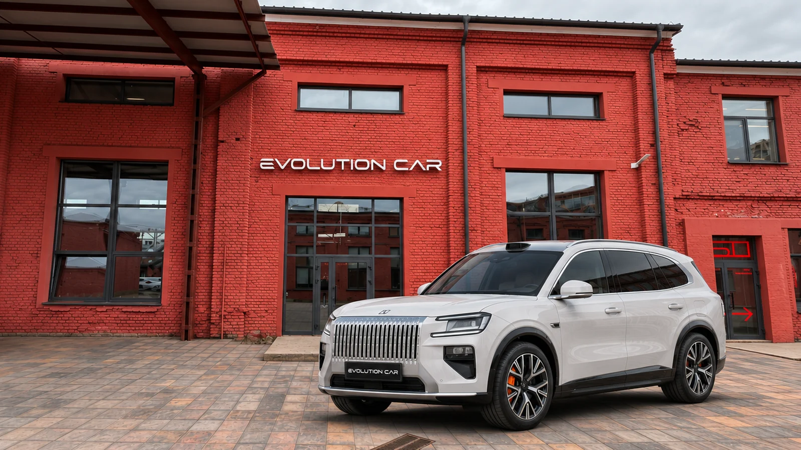
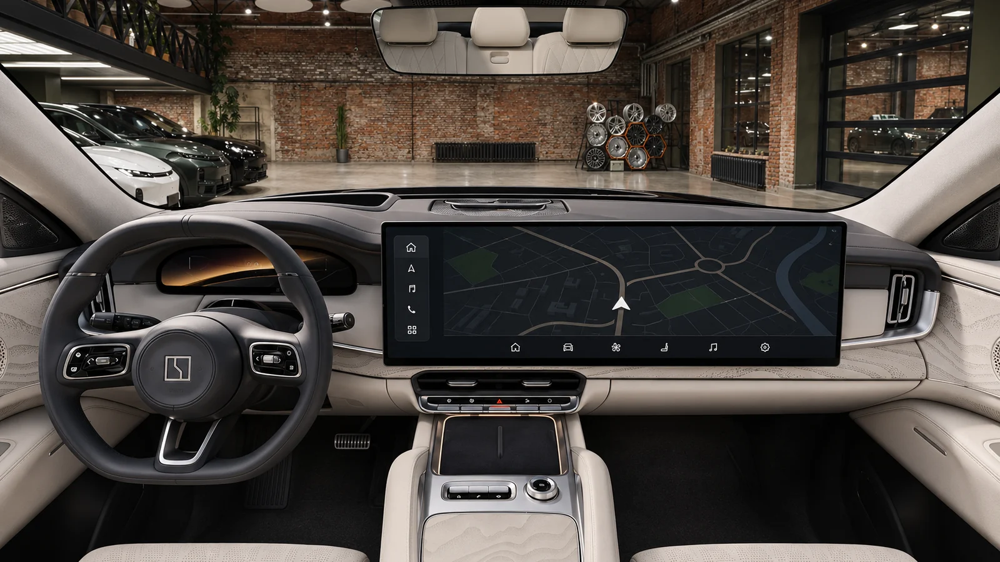
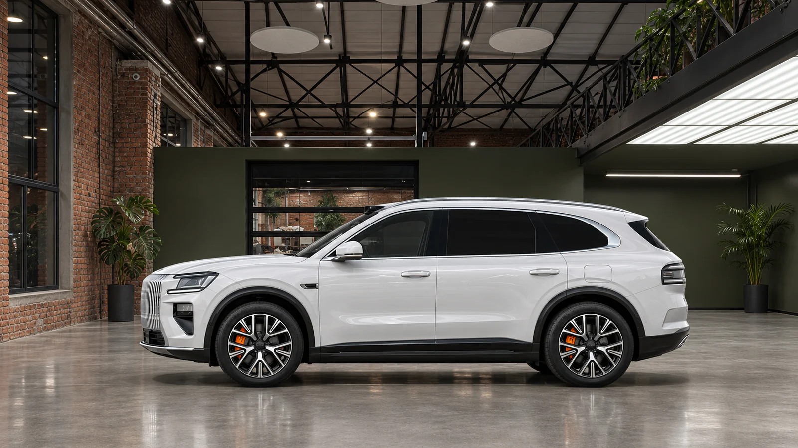
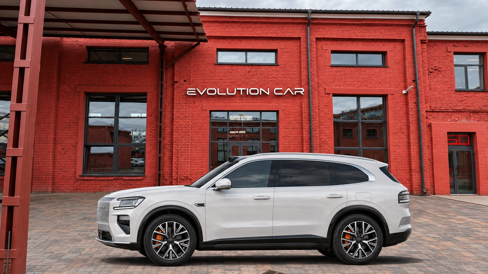
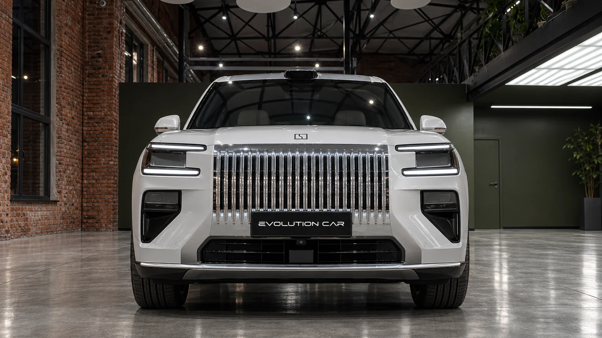

Evolution Car: кадры с новым логотипом – выбор сделан
Послушать итог голосом
Решение Артёма 15.11: кадр 0 у фасада – лучший, стоит в блоке «Тест-драйв» карточки Zeekr 8X и дальше так на все карточки авто. Кадры 1 и 5 – на статьи («кайф»). Кадры 2 и 3 – чуть слабее, тоже на статьи. Кадр 4 (сзади у фасада) убран.
Логотип взят из файла сайта, тот же шрифт, что в шапке evolutioncar.by. Машина – Zeekr 8X. Фон – настоящий фасад на Машерова, 15/4 и настоящий зал по вашим фото. Кадры 1600×900, WebP, 100–270 КБ.
| Кадр | Куда |
|---|---|
| 0. У фасада, ¾ спереди | блок «Тест-драйв» в карточке, шаблон для всех карточек |
| 1. Салон, место водителя | статьи |
| 5. Спереди в зале | статьи |
| 2. В зале сбоку | статьи, запасной |
| 3. Профиль у фасада | статьи, запасной |
Карточка с кадром: прототип Zeekr 8X, блок «Тест-драйв»
0. У фасада, ¾ спереди – твой кадр с новым логотипом

- Что поменяли: вывеска «EVolution electric car» заменена на «EVOLUTION CAR» в шрифте логотипа. Номер теперь чёрный, с белым логотипом. Чужой Mercedes с края обрезан.
- Где уместен: первый экран карточки, каталог, блок «Где посмотреть». Этот же кадр теперь стоит в отчёте недели для клиента.
1. Салон машины: место водителя, через стекло – ваш зал

- Переделано 15.11: салон больше не рисует генератор. Это официальный рендер Zeekr 8X без изменений: приборка, двойной экран, руль, тоннель. Заменено только то, что видно за стеклом: настоящее фото вашего зала (стойка дисков, оливковая стена, ворота). Капот за стеклом перекрашен из бордового в белый, как у машины на остальных кадрах.
- Где уместен: блок «Салон и экраны» в карточке, статьи про комплектации.
- Учти: мелкие китайские подписи в виджетах экрана слегка размыты, иероглифов не видно.
2. В зале сбоку, двери закрыты

- Переделано 15.11: кадр с открытой дверью убран. Машина стоит боком, все двери закрыты, силуэт тот же, что на кадре 3 у фасада.
- Где уместен: «Посмотреть вживую», страница «О салоне», галерея карточки.
3. Профиль у фасада

- Где уместен: галерея карточки (размер и силуэт), блок характеристик, сравнение версий.
- Получилось: вся машина целиком, колёса точные, вывеска над ней.
5. Спереди в зале, низкая точка

- Где уместен: баннер главной, первый экран премиальной карточки, обложка статьи.
- Получилось: решётка и световые полосы на весь кадр, чёрный номер с логотипом читается.
Нужно от тебя
- Делать ли такой же кадр у фасада на остальные модели каталога сейчас или после боя карточки 8X.
Что раскрыть
- Те же ракурсы в другом цвете машины.
- Вечер у фасада с подсвеченной новой вывеской.